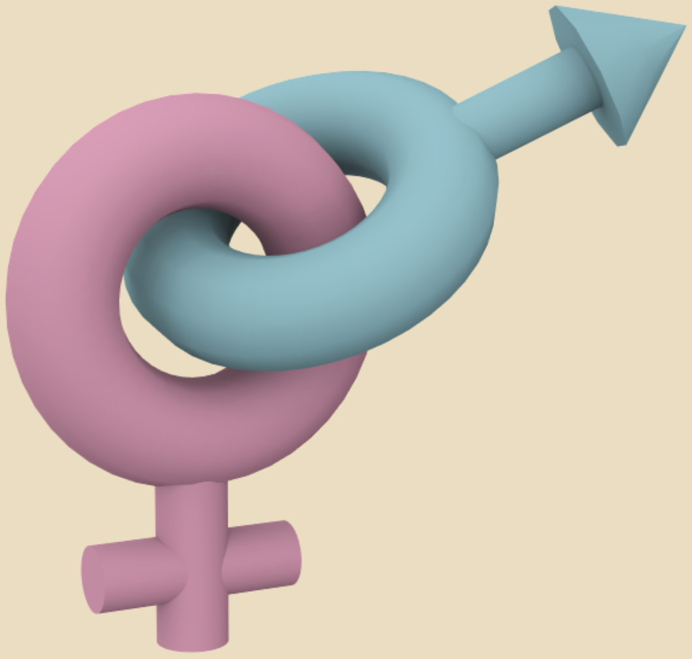

GenBi: Curbing Gender Bias in Print MediaA study of gender portrayals in Pakistan’s print media and the proposal of an application to reduce sexism in the news. |
 |
✏️ Overview
I worked with a group of students at the Technology for People Initiative Lab to study the degree of implicit gender bias in Pakistan’s news articles. We used quantitative methods, including natural language processing techniques, to study the differences in the depiction of figures based on gender stereotypes. We then designed an application for journalists to calculate this bias in their articles in an attempt to help them become more gender-sensitive in their writing.
👩🏻💻 My Role
I was the team lead of a group of 4 undergraduate students in this project. I was heavily involved in all stages of the process, including research, data analysis, and application design.
🚩 The Problem
Media can influence people’s behavior and attitudes about various issues, including gender roles for men and women. Simultaneously, journalists are also a part of the same society and may thus be equally susceptible to societal ideology and characteristics.
This idea becomes imperative to explore in societies that are traditionally characterized as being biased. Pakistan is a prominent case – ranking 150 out of 189 countries in the Gender Inequality Index.
Gender bias in the media has been extensively studied in the West, showing how the focus of news for women leans more towards personal information than for men, who are covered more with regards to their policy stances. While similar
studies have been conducted on a small-scale in Pakistan, no large-scale, automated data analysis has been conducted. Furthermore, a significant lack of studies propose methods to reduce the said bias in the media.
🎯 Our Goal
This study's primary aim is to expose the possibility of implicit gender bias in news articles. Secondly, we aim to develop an application to bring awareness to the issue and reduce this bias.
📝 Method
We narrowed down three ways in which gender bias can be operationalized in media content. Firstly, women are underrepresented in the media, which reflects the cultural norm of their unimportance. Secondly, when women are represented, it is generally in
topics that are considered less important and more-stereotypically female. Thirdly, gender-normative stereotypes are applied to both genders that correspond with social expectations.
We formed three research hypotheses to evaluate these conditions:
- Coverage. Males dominate coverage in Pakistan’s newspapers, having more articles dedicated to them and with higher word counts. In contrast, females are given a significantly lower number of mentions.
- Placement. Males will dominate coverage in sections considered to be more important, including front-page, politics, and business. In contrast, females will have a comparatively greater number of references in sections considered to be stereotypically feminine, such as entertainment.
- Content. Males and females are associated with stereotypical roles and traits, but this is much more common for females. A woman’s personal life will be mentioned more frequently than her male counterparts, whose coverage will be more towards their profession.
To test hypotheses 1, we calculated the number of articles featuring men and women. We used pronouns to determine which genders were being covered in the news articles: articles containing male pronouns such as ‘He’, ‘Him’, and ‘His’ were taken to be covering male figures, and articles containing female pronouns such as ‘She, ‘Her’, and ‘Hers’ were taken to be covering female figures. As predicted, male pronouns outnumbered female pronouns by a ratio of approximately 10 to 1. We also looked at the word counts of these articles, and found that the average word count males featuring articles versus females featuring articles had a ratio of approximately 3 to 2.
To test hypothesis 2, we used the previously gender-labeled articles and calculated their frequency in major news sections, namely front page, national, editorial, sports, and entertainment. We found that males were mentioned a significantly greater number of times in all these sections, especially in front page, with articles featuring males being almost 15 times higher than those featuring females.
To test hypothesis 3, we assessed how strongly male and female pronouns were associated with stereotypical labels. We used latent semantic analysis (LSA) to do so.
Latent semantic analysis is a technique that examines relationships between documents and their terms. It assumes that words that have similar meanings will occur in similar passages of text. So, for example, words that rarely show up in the same passages together, but appear around similar words, will be considered closely related.
In our study, we generated a vector for each term using LSA to represent the documents the term appears in. Then, we found the degree of similarity between two terms, by calculating the angle between their vectors. In our case, we were interested in finding the most similar terms against gender-specific words and names.
For brevity, I will describe only a sample of our results. The table below shows the most semantically similar words to gendered pronouns across our entire dataset:
| Semantically Similar Terms | ||||||||||
| 1 | 2 | 3 | 4 | 5 | 6 | 7 | 8 | 9 | 10 | |
| Male Pronouns | Election | Chairman | Cricket | Career | Tournament | Shot | Hockey | Champion | President | Politician |
| Female Pronouns | Wife | Clothe | Innocent | Sexually | Rape | Marry | Malala | Husband | Dead | Rescue |
The results show a sharp contrast in the semantically similar words of each group of gendered pronouns. Male pronouns are associated with words related to politics and sports, such as ‘election’, ‘chairman’, and ‘cricket’. This is
not surprising, as politics and sports dominate the news in Pakistan. Female pronouns, on the other hand, can be seen to be associated with words relating to marriage, such as ‘wife’, ‘husband’, and ‘marry’, and more shockingly, words on
crime and violence, such as ‘rape’, and ‘dead’. These results demonstrate how men are more likely to be written about with regard to government, whereas women are often written about in terms of their relationships and on stories that portray
them as victims.
Altogether, our results indicate that women are represented less frequently and in a more stereotypical light in media. Since these news messages are distributed daily all over Pakistan, in printed newspapers and on the internet,
it seems likely that this presentation reinforces prevalent gender stereotypes and contributes to gender inequities.
🎨 Application Design
Research needs to do more than highlight the prevalence of gender bias. Once established that reportage is subjective, scholarly attention should be shifted to how to reduce the bias. Therefore, we designed a web application that takes as input a set
of articles, and uses the methods described above to produce a report on detected gender bias. This application is intended to aid journalists and newspaper companies in recognizing what portions of their work contribute to gender bias,
in hopes that they become more cautious of the issue and take steps to reduce it.
We evaluated our application with six practicing journalists. These journalists had been practicing journalism for at least five years, worked with multiple organizations, and exhibited a mature understanding of the practices and
methodology carried out in print media. Our findings are as follows:
- There currently exists no automated tool in the news coverage pipeline for mitigating gender bias in articles. Currently, articles are manually checked for bias by other editors; however, this method is prone to human subjectivity, as discussed previously.
- The writings of journalists evolve drastically over time, and the critiques they are offered throughout their careers have a significant impact on this. Therefore, an automated tool like ours can potentially help writers become more gender-sensitive. The journalists we interviewed expressed confidence in the efficacy of incorporating our tool into existing news coverage pipelines.
- The anonymity of writers is critical for the application to be accepted by journalists. Writers will hesitate to apply the tool in real life if it compromises their reputation as credible writers. Therefore, the journalists we interviewed stressed the importance of maintaining privacy. While the application initially had the capability to generate a specific writer's reports, this feature was later discarded to respect journalists' privacy and facilitate their shift to becoming more gender-sensitive writers.
💡 Conclusion
Gender bias is a serious issue that is ever-present in the media. In this study, we concretely represented gender bias in Pakistan’s news articles and described the design of an application to make journalists more conscious of the issue. Our application is a step towards reducing gender bias in the news media, and we hope to see more solutions proposed in the future that can ultimately minimize this bias.